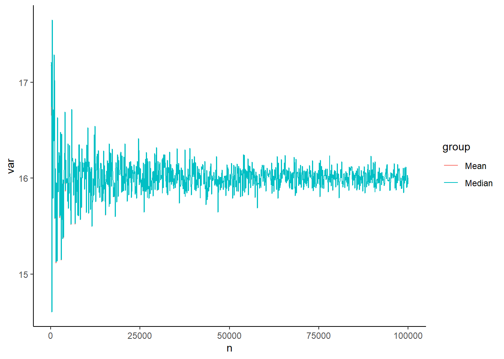

This page is part of the University of Colorado-Anschutz Medical Campus’ BIOS 6618 Recitation collection. To view other questions, you can view the BIOS 6618 Recitation collection page or use the search bar to look for keywords.
Problem Motivation
Drs. Bob and Billy are friends with a shared interest in heights. They learned that the average height for the population of adult male patients at the University of Colorado Hospital (UCH) is 72 inches. Dr. Bob hypothesizes that the median height of adult male patients that arrive at the hospital the next day will be close to the population average. Assume the heights of adult male patients seen at the UCH follow a normal distribution with mean=72 inches and variance=16 inches\(^2\).
Bias Calculation for the Median
Assume that 100 patients are seen the next day. If Dr. Bob calculates the median height for the adult male patients seen on that day, what is the bias of his median estimate with respect to the population mean? (Hint: Simulate a normal distribution of size n=100)
Code
set.seed(6618) # set seed for reproducibilitysim_norm <-rnorm(n=100, mean=72, sd=sqrt(16)) # simulate N=100 observationsmed <-median(sim_norm) # estimate our medianbias <- med -72# calculate our bias (estimate - population mean)bias
[1] -0.8545658
The median height from the sample is 71.15. Thus, the median is biased -0.85 inches with respect to the population mean of 72.
Consistency for the Median
Although improbable, now assume the number of patients seen in a day increases. Increase the sample size from 100 to 100,000, by 100 person increments. Calculate the bias for the varying sample sizes. Plot the results. What does this say about the consistency of the median estimate with respect to the population mean?
Code
set.seed(6618) # Set seed for reproducibility# Increasing sample sizens <-seq(100,100000,by=100)bias_median<-sapply(ns, function(x){ sim<-rnorm(n=x,mean=72,sd=sqrt(16)) #Simulate normal dist. for each n medians<-median(sim) # Calculate the median of the samples bias<-medians-72# Calculate the bias of the samplesreturn(bias)}) # Note, ")" matches to the left parenthesis for sapply# Plot the resultsplot(x=ns,y=bias_median,type='l')
When the sample size increases to 100,000, the bias of the median appears to vary about 0. Thus, this simulation exercise suggests that the median becomes unbiased as the sample size increases infinitely, and the median estimator could be considered consistent with respect to the population mean.
Variance as Our Sample Size Increases
How does the variance of the data with respect to the median estimator change as the sample size increases?
One formula for the variance we could use is:
[ Var(X)=_{i} (x_i-median)^2/n, ]
where \(\forall i\) means “for all” values of \(i\). In other words, we need to convert this from a mathematical formula to something we can code in R.
Code
set.seed(6618) # set for reproducibility# Increasing sample sizens <-seq(100,100000,by=100)var_median <-rep(NA, length(ns))for( i in1:length(ns) ){ sim <-rnorm(n=ns[i], mean=72, sd=sqrt(16)) med <-median(sim) var_median[i] <-sum((sim-med)^2) /length(sim) # converting that formula to code}# Plot the resultsplot(x=ns,y=var_median,type='l')
As the sample size increases, the variance about the median varies less and centers about the population variance. This is something we could work to derive theoretically, but it isn’t really the purpose of our methods class (maybe in theory, maybe…). Instead, via a small simulation, we’ve identified that the variance becomes less erratic as our sample size increases and also converges to the variance we simulated our data from.
Note, if you do a similar plot with the mean instead of the median, you should see a very similar result for our simulated normal data across the sample sizes:
Code
set.seed(6618) # set for reproducibility# Increasing sample sizens<-seq(100,100000,by=100)var_mean <-rep(NA, length(ns))for( i in1:length(ns) ){ sim <-rnorm(n=ns[i], mean=72, sd=sqrt(16)) med <-mean(sim) var_mean[i] <-sum((sim-med)^2) /length(sim) # converting that formula to code}# Plot the resultsplot(x=ns,y=var_mean,type='l', ylab='Woah, this is the variance of the mean!', xlab='Poorly formatted sample sizes')
Asymptotic Relative Efficiency
Dr. Billy bets Dr. Bob that the sample mean is more efficient (i.e. less variable about the population mean) than the sample median. To compare the relative efficiency of estimators, simulate 10,000 normal distributions with sample size n=1000, population mean=72 inches, and variance=16 inches\(^2\). Calculate the median and mean for each simulation. Then compare the variance of the set of sample medians to the variance of the set of sample means. Using the results of your simulation, which estimator is more efficient?
To answer this question we need to evaluate the asymptotic relative efficiency of our estimators. If two estimators (\(V_n\), \(W_n\)) are consistent and their variances converge in distribution, the ARE of \(V_n\) with respect to (with respect to) \(W_n\) is given by:
\[ARE(V_n,W_n)=Var(W_n)/Var(V_n)\].
Code
set.seed(6618) # Set seed the same as before# Create a vector of 10,000 1,000'sns<-rep(1000, 10000)mat_res <-matrix(nrow=10000, ncol=2, dimnames=list(1:10000, c('mean','median')) )for( k in1:length(ns) ){ sim <-rnorm(n=ns[k], mean=72, sd=sqrt(16)) median_est <-median(sim) mean_est <-mean(sim) mat_res[k,c('mean','median')] <-c(mean_est, median_est) # NOTE: here I included the column names in the matrix, but with only 2 values we could also have left it blank and R would have assumed we wanted to fill in the two values}var(mat_res[,'mean'])/var(mat_res[,'median']) # Relative efficiency
[1] 0.6398269
The variance of the sample medians is 0.0259, and the variance of the sample means is 0.0166. Thus, the relative efficiency of the sample median with respect to to the sample mean is 0.6398. Thus, the sample mean is more efficient (i.e. less variable about the population mean) than the sample median.
Graphing Variation
Let’s assume that we wanted to somehow plot the variances of the mean and median together in some way for a comparison. There are many possible approaches, but we’ll present a few below with regards to plotting them on the same figure or creating a panel figure.
As a quick check of our results, the range across all sample sizes is:
Code
range(var_mean) # range of variance values for all means
[1] 14.60288 17.64583
Code
range(var_median) # range of variance values for all medians
[1] 14.60315 17.65101
We see that they are very similar, but they are slightly different.
Approach 1: The Same Figure with Base R Plotting
In this approach, we are plotting both on the same figure. We can start by (1) plotting one of our vectors, (2) adding the other vector, and then (3) adding a legend. While we are at it, we can also clean up the labels to be a little more reader-friendly:
Code
ns<-seq(100,100000,by=100) # need to re-enter ns since it is replaced in HW 1, Q3c/dplot(x=ns, y=var_mean, type='l', ylab='Variance Estimate', xlab='Sample Size (in 10,000s)', xaxt='n')# The xaxt='n' argument tells R we don't want to plot the x-axis's labels/ticks# The axis() function allows us to customize and add details about a given axis, here the x-axis:axis(side=1, at=seq(from=0, to=100000, by=20000), labels=seq(from=0,to=10,by=2))# The lines() function adds line graphs given the provided coordinates [note, points() is a related argument to add scatterplot points]lines(x=ns, y=var_median, lty=2, col='orangered2')# We can add a legendlegend('topright', bty='n', lty=c(1,2), col=c('black','orangered2'), legend=c('Mean','Median'))
Code
# You can specify relational locations (e.g., 'topright') or x-y coordinates# bty removes a border around the legend (which is personal preference for me)
We see with this example, the results are very similar, so they appear nearly on top of one another.
Approach 2: Panel Figure in Base R Plotting
In this approach, we want to plot the mean and median variance estimates side-by-side in two separate figures. There are many packages that can help layout this type of plot, but one easy approach is to use the built-in par( mfrow=c(1,2) ) function to specify a multi-panel figure with 1 row and 2 columns:
Code
par( mfrow=c(1,2) ) # tell R we want to create a panel figure# Plot the mean in our first figureplot(x=ns, y=var_mean, type='l', ylab='Variance Estimate', xlab='Sample Size (in 10,000s)', xaxt='n', main='Mean', xlim=c(0,100000), ylim=c(14.5,17.8))axis(side=1, at=seq(from=0, to=100000, by=20000), labels=seq(from=0,to=10,by=2))# Plot the median in our second figureplot(x=ns, y=var_median,type='l', ylab='Variance Estimate', xlab='Sample Size (in 10,000s)', xaxt='n', main='Median', xlim=c(0,100000), ylim=c(14.5,17.8))axis(side=1, at=seq(from=0, to=100000, by=20000), labels=seq(from=0,to=10,by=2))
When I make panel figures, some things I like to try and keep in mind:
Is it useful to add labels (with main=) so a reader knows what is in each plot?
Is it useful to standardize the x-axis and y-axis ranges? (For example, if we are trying to make an apples-to-apples comparison, it would be helpful to have the same ranges to help a reader more quickly see potential differences.)
Since I’m generally squeezing more information into the same space, do I need to modify the plotting characteristics (e.g., line types, colors, points, etc.)?
Approach 3: The Same Figure with ggplot
A popular package for creating figures is ggplot. It has its own structure, unique style(s), and syntax. It is helpful if we first combine the two sets of results into a data frame to provide to ggplot:
Code
# Step 1: Create a data frame of our resulting variance estimatesdat <-data.frame( n =c(ns, ns),var =c(var_mean, var_median),group =c(rep('Mean', times=length(ns)), rep('Median', times=length(ns) )) )head(dat) # see first few rows
n var group
1 100 17.17715 Mean
2 200 16.65669 Mean
3 300 14.60288 Mean
4 400 17.64583 Mean
5 500 16.68933 Mean
6 600 15.79174 Mean
Code
tail(dat) # see last few rows
n var group
1995 99500 15.97743 Median
1996 99600 15.90350 Median
1997 99700 15.90833 Median
1998 99800 16.03050 Median
1999 99900 15.93699 Median
2000 100000 16.00330 Median
Now we can load the ggplot2 package and create a line graph:
Code
library(ggplot2)ggplot(dat, aes(x=n, y=var, group=group)) +geom_line(aes(color=group))+geom_point(aes(color=group)) # can remove if you don't want points added
Again, our results are so similar, this plot largely covers the mean group.
One cool aspect of ggplot2 is that we can save the plot as an object and then make other modifications:
Code
p <-ggplot(dat, aes(x=n, y=var, group=group)) +geom_line(aes(color=group))p +scale_color_grey() # Makes our figure grayscale
Code
p +scale_color_brewer(palette ='Pastel2') # choose a different color palette
Code
p +theme_classic() # Plots it in a base R theme

Code
p +scale_color_brewer(palette ='Accent') +theme_classic() # combine colors and theme
Approach 4: Panel Figure with ggplot
We can also use various approach to create a panel figure once we’ve generated our two individual plots. Here, we’ll use the patchwork library:
Code
library(patchwork)
Warning: package 'patchwork' was built under R version 4.4.1
Here we see we have the figures with the default ggplot-styling side-by-side.
Source Code
---title: "Mini-Simulation Study for Bias, Consistency, and Efficiency of the Sample Median versus the Sample Mean"author: name: Alex Kaizer roles: "Instructor" affiliation: University of Colorado-Anschutz Medical Campustoc: truetoc_float: truetoc-location: leftformat: html: code-fold: show code-overflow: wrap code-tools: true---```{r, echo=F, message=F, warning=F}library(kableExtra)library(dplyr)```This page is part of the University of Colorado-Anschutz Medical Campus' [BIOS 6618 Recitation](/recitation/index.qmd) collection. To view other questions, you can view the [BIOS 6618 Recitation](/recitation/index.qmd) collection page or use the search bar to look for keywords.# Problem MotivationDrs. Bob and Billy are friends with a shared interest in heights. They learned that the average height for the population of adult male patients at the University of Colorado Hospital (UCH) is 72 inches. Dr. Bob hypothesizes that the median height of adult male patients that arrive at the hospital the next day will be close to the population average. Assume the heights of adult male patients seen at the UCH follow a normal distribution with mean=72 inches and variance=16 inches$^2$. ## Bias Calculation for the MedianAssume that 100 patients are seen the next day. If Dr. Bob calculates the median height for the adult male patients seen on that day, what is the **bias** of his median estimate with respect to the population mean? (Hint: Simulate a normal distribution of size n=100)```{r}set.seed(6618) # set seed for reproducibilitysim_norm <-rnorm(n=100, mean=72, sd=sqrt(16)) # simulate N=100 observationsmed <-median(sim_norm) # estimate our medianbias <- med -72# calculate our bias (estimate - population mean)bias```The median height from the sample is `r round(med,2)`. Thus, the median is biased `r round(bias,2)` inches with respect to the population mean of 72.## Consistency for the MedianAlthough improbable, now assume the number of patients seen in a day increases. Increase the sample size from 100 to 100,000, by 100 person increments. Calculate the bias for the varying sample sizes. Plot the results. What does this say about the **consistency** of the median estimate with respect to the population mean?```{r, cache=TRUE}set.seed(6618) # Set seed for reproducibility# Increasing sample sizens <-seq(100,100000,by=100)bias_median<-sapply(ns, function(x){ sim<-rnorm(n=x,mean=72,sd=sqrt(16)) #Simulate normal dist. for each n medians<-median(sim) # Calculate the median of the samples bias<-medians-72# Calculate the bias of the samplesreturn(bias)}) # Note, ")" matches to the left parenthesis for sapply# Plot the resultsplot(x=ns,y=bias_median,type='l')```When the sample size increases to 100,000, the bias of the median appears to vary about 0. Thus, this simulation exercise suggests that the median becomes unbiased as the sample size increases infinitely, and the median estimator could be considered consistent with respect to the population mean.## Variance as Our Sample Size IncreasesHow does the variance of the data with respect to the median estimator change as the sample size increases?One formula for the variance we could use is:\[ Var(X)=\sum_{\forall i} (x_i-median)^2/n, \]where $\forall i$ means "for all" values of $i$. In other words, we need to convert this from a mathematical formula to something we can code in R.```{r cache=TRUE}set.seed(6618) # set for reproducibility# Increasing sample sizens <-seq(100,100000,by=100)var_median <-rep(NA, length(ns))for( i in1:length(ns) ){ sim <-rnorm(n=ns[i], mean=72, sd=sqrt(16)) med <-median(sim) var_median[i] <-sum((sim-med)^2) /length(sim) # converting that formula to code}# Plot the resultsplot(x=ns,y=var_median,type='l')```As the sample size increases, the variance about the median varies less and centers about the population variance. This is something we could work to derive theoretically, but it isn't really the purpose of our methods class (maybe in theory, maybe...). Instead, via a small simulation, we've identified that the variance becomes less erratic as our sample size increases and also converges to the variance we simulated our data from. *Note, if you do a similar plot with the mean instead of the median, you should see a very similar result for our simulated normal data across the sample sizes:*```{r cache=TRUE}set.seed(6618) # set for reproducibility# Increasing sample sizens<-seq(100,100000,by=100)var_mean <-rep(NA, length(ns))for( i in1:length(ns) ){ sim <-rnorm(n=ns[i], mean=72, sd=sqrt(16)) med <-mean(sim) var_mean[i] <-sum((sim-med)^2) /length(sim) # converting that formula to code}# Plot the resultsplot(x=ns,y=var_mean,type='l', ylab='Woah, this is the variance of the mean!', xlab='Poorly formatted sample sizes')```## Asymptotic Relative Efficiency Dr. Billy bets Dr. Bob that the sample mean is more **efficient** (i.e. less variable about the population mean) than the sample median. To compare the relative efficiency of estimators, simulate 10,000 normal distributions with sample size n=1000, population mean=72 inches, and variance=16 inches$^2$. Calculate the median and mean for each simulation. Then compare the variance of the set of sample medians to the variance of the set of sample means. Using the results of your simulation, which estimator is more efficient? To answer this question we need to evaluate the *asymptotic relative efficiency* of our estimators. If two estimators ($V_n$, $W_n$) are consistent and their variances converge in distribution, the ARE of $V_n$ with respect to (with respect to) $W_n$ is given by:$$ARE(V_n,W_n)=Var(W_n)/Var(V_n)$$.```{r cache=TRUE}set.seed(6618) # Set seed the same as before# Create a vector of 10,000 1,000'sns<-rep(1000, 10000)mat_res <-matrix(nrow=10000, ncol=2, dimnames=list(1:10000, c('mean','median')) )for( k in1:length(ns) ){ sim <-rnorm(n=ns[k], mean=72, sd=sqrt(16)) median_est <-median(sim) mean_est <-mean(sim) mat_res[k,c('mean','median')] <-c(mean_est, median_est) # NOTE: here I included the column names in the matrix, but with only 2 values we could also have left it blank and R would have assumed we wanted to fill in the two values}var(mat_res[,'mean'])/var(mat_res[,'median']) # Relative efficiency```The variance of the sample medians is `r round(var(mat_res[,'median']),4)`, and the variance of the sample means is `r round(var(mat_res[,'mean']),4)`. Thus, the relative efficiency of the sample median with respect to to the sample mean is `r round( var(mat_res[,'mean'])/var(mat_res[,'median']) , 4)`. Thus, the sample mean is more efficient (i.e. less variable about the population mean) than the sample median.## Graphing VariationLet's assume that we wanted to somehow plot the variances of the mean and median together in some way for a comparison. There are many possible approaches, but we'll present a few below with regards to plotting them on the same figure or creating a panel figure.As a quick check of our results, the range across all sample sizes is:```{r}range(var_mean) # range of variance values for all meansrange(var_median) # range of variance values for all medians```We see that they are very similar, but they are slightly different.### Approach 1: The Same Figure with Base R PlottingIn this approach, we are plotting both on the same figure. We can start by (1) plotting one of our vectors, (2) adding the other vector, and then (3) adding a legend. While we are at it, we can also clean up the labels to be a little more reader-friendly:```{r}ns<-seq(100,100000,by=100) # need to re-enter ns since it is replaced in HW 1, Q3c/dplot(x=ns, y=var_mean, type='l', ylab='Variance Estimate', xlab='Sample Size (in 10,000s)', xaxt='n')# The xaxt='n' argument tells R we don't want to plot the x-axis's labels/ticks# The axis() function allows us to customize and add details about a given axis, here the x-axis:axis(side=1, at=seq(from=0, to=100000, by=20000), labels=seq(from=0,to=10,by=2))# The lines() function adds line graphs given the provided coordinates [note, points() is a related argument to add scatterplot points]lines(x=ns, y=var_median, lty=2, col='orangered2')# We can add a legendlegend('topright', bty='n', lty=c(1,2), col=c('black','orangered2'), legend=c('Mean','Median'))# You can specify relational locations (e.g., 'topright') or x-y coordinates# bty removes a border around the legend (which is personal preference for me)```We see with this example, the results are *very* similar, so they appear nearly on top of one another.### Approach 2: Panel Figure in Base R PlottingIn this approach, we want to plot the mean and median variance estimates side-by-side in two separate figures. There are many packages that can help layout this type of plot, but one easy approach is to use the built-in `par( mfrow=c(1,2) )` function to specify a multi-panel figure with 1 row and 2 columns:```{r}par( mfrow=c(1,2) ) # tell R we want to create a panel figure# Plot the mean in our first figureplot(x=ns, y=var_mean, type='l', ylab='Variance Estimate', xlab='Sample Size (in 10,000s)', xaxt='n', main='Mean', xlim=c(0,100000), ylim=c(14.5,17.8))axis(side=1, at=seq(from=0, to=100000, by=20000), labels=seq(from=0,to=10,by=2))# Plot the median in our second figureplot(x=ns, y=var_median,type='l', ylab='Variance Estimate', xlab='Sample Size (in 10,000s)', xaxt='n', main='Median', xlim=c(0,100000), ylim=c(14.5,17.8))axis(side=1, at=seq(from=0, to=100000, by=20000), labels=seq(from=0,to=10,by=2))```When I make panel figures, some things I like to try and keep in mind:1. Is it useful to add labels (with `main=`) so a reader knows what is in each plot?2. Is it useful to standardize the x-axis and y-axis ranges? (For example, if we are trying to make an apples-to-apples comparison, it would be helpful to have the same ranges to help a reader more quickly see potential differences.)3. Since I'm generally squeezing more information into the same space, do I need to modify the plotting characteristics (e.g., line types, colors, points, etc.)?### Approach 3: The Same Figure with `ggplot`A popular package for creating figures is `ggplot`. It has its own structure, unique style(s), and syntax. It is helpful if we first combine the two sets of results into a data frame to provide to `ggplot`:```{r}# Step 1: Create a data frame of our resulting variance estimatesdat <-data.frame( n =c(ns, ns),var =c(var_mean, var_median),group =c(rep('Mean', times=length(ns)), rep('Median', times=length(ns) )) )head(dat) # see first few rowstail(dat) # see last few rows```Now we can load the `ggplot2` package and create a line graph:```{r}library(ggplot2)ggplot(dat, aes(x=n, y=var, group=group)) +geom_line(aes(color=group))+geom_point(aes(color=group)) # can remove if you don't want points added```Again, our results are so similar, this plot largely covers the mean group.One cool aspect of `ggplot2` is that we can save the plot as an object and then make other modifications:```{r}p <-ggplot(dat, aes(x=n, y=var, group=group)) +geom_line(aes(color=group))p +scale_color_grey() # Makes our figure grayscalep +scale_color_brewer(palette ='Pastel2') # choose a different color palettep +theme_classic() # Plots it in a base R themep +scale_color_brewer(palette ='Accent') +theme_classic() # combine colors and theme```### Approach 4: Panel Figure with `ggplot`We can also use various approach to create a panel figure once we've generated our two individual plots. Here, we'll use the `patchwork` library:```{r}library(patchwork)p_mean <- p <-ggplot(dat[ which(dat$group=='Mean'),], aes(x=n, y=var, group=group)) +geom_line() +ggtitle('Mean') +xlab('Sample Size') +ylab('Variance') +ylim(14.5,17.8)p_median <- p <-ggplot(dat[ which(dat$group=='Median'),], aes(x=n, y=var, group=group)) +geom_line() +ggtitle('Median') +xlab('Sample Size') +ylab('Variance') +ylim(14.5,17.8)p_mean + p_median```Here we see we have the figures with the default ggplot-styling side-by-side.